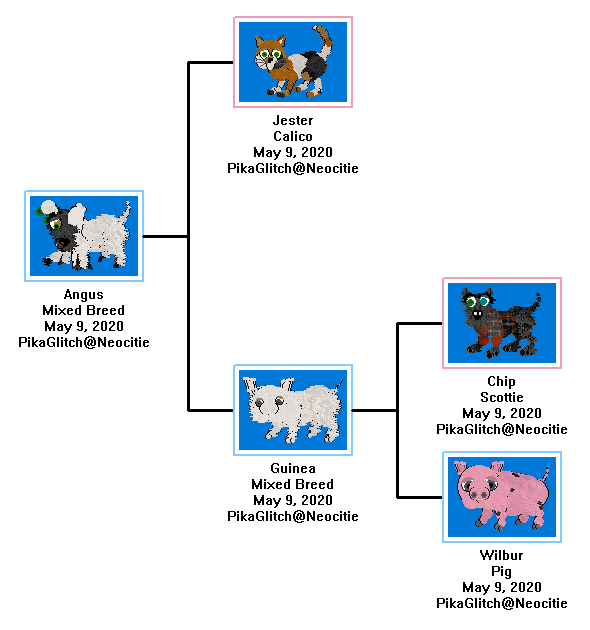
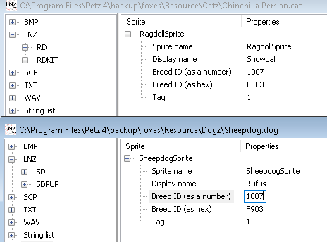

Go back
Have you ever wished that your dog was a cat or a pig? Well wish no more!
This tutorial will teach you how to convert any petz into a cat, dog, pig, or bunny.
First off: How is this useful? Many people use this to be able to breed their pigs and bunnies, but I use it to give petz more unique personalities.
Take my two bunnies for example. They're bunnies, but the're technically maine coon chinchi mixbreeds so they have personality traits from both. They're unique!
You can also use this method to do some crazy crap like this:

In this tutorial I will make chinchis with sheepdog personalities!
First we just put the chinchi LNZ in the sheepdog file.
Also MAKE SURE to make backups as this will be important later on!
Make sure you change the paths in both LNZ files to match the LNZ file names.
You also have to change the sheepdog's offset ID to match the chinchi ID.

After this you will overwrite the chinchi file in the catz folder with the sheepdog.

Now we can go to the adoption center and... EGAD!
Your pet may look like this when it comes out of the adoption center. Ignore this and adopt it anyway.
All we need to do is to swap out our edited chinchi file with the original one after you adopt or breed it.
There we go. Now we have a cute chinchi with traits of a sheepdog!
He's floppy, likes fetch, can learn tricks, and he lacks the tantrums and sleepy sickness that a regular chinchi would have!
You can download Rufus the chinchi here!
You can also download Angus's crazy family here!